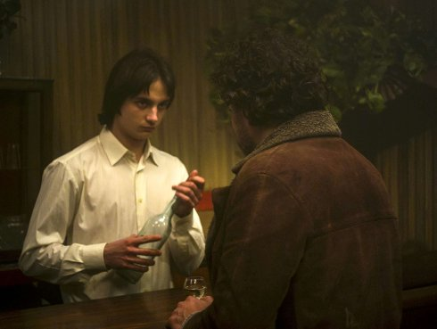

Longa Noite
Endless Night

Eloy Enciso
Montag 14 okt | 20.30 | Werkstattkino
Eine Reise durch 30 Jahre Franco-Diktatur: Ein choraler Film aus den Geschichten derer, die nach dem Krieg eine dunkle Zeit durchlebten. Die Stimme des Widerstands hebt sich von der geheimnisvollen galizischen Landschaft ab. Nach dem Krieg kehrt Anxo in sein Heimat-land, ins ländliche Galizien, zurück. Er wird von den Siegern und den Besiegten mit Besorgnis empfangen, sehen sie doch in ihm das Risiko, eine Reise in ihre verdrängten Erinnerungen antreten zu müssen.
Eloy Enciso geb. 1975 in Meira, Galicien (Spanien). Enciso studierte Dokumentarfilm an der Escuela Internacional de Cine y TV in Kuba. Encisos Arbeit wurde auch im Centre de Cultura Contemporània de Barcelona, im Museo Nacional Centro de Arte Reina Sofía, im Museum of Modern Art (MoMA) und im Museum of the Moving Image gezeigt. Im Jahr 2014 erhielt er das Robert Gardner Stipendium vom Harvard's Film Study Center und nahm am MoMA-Programm Modern Mondays teil. Er lebt und arbeitet in Galizien. |
Filme Pic-nic 2007 | Arraianos 2012 (8. UX) | Longa Noite 2019 |